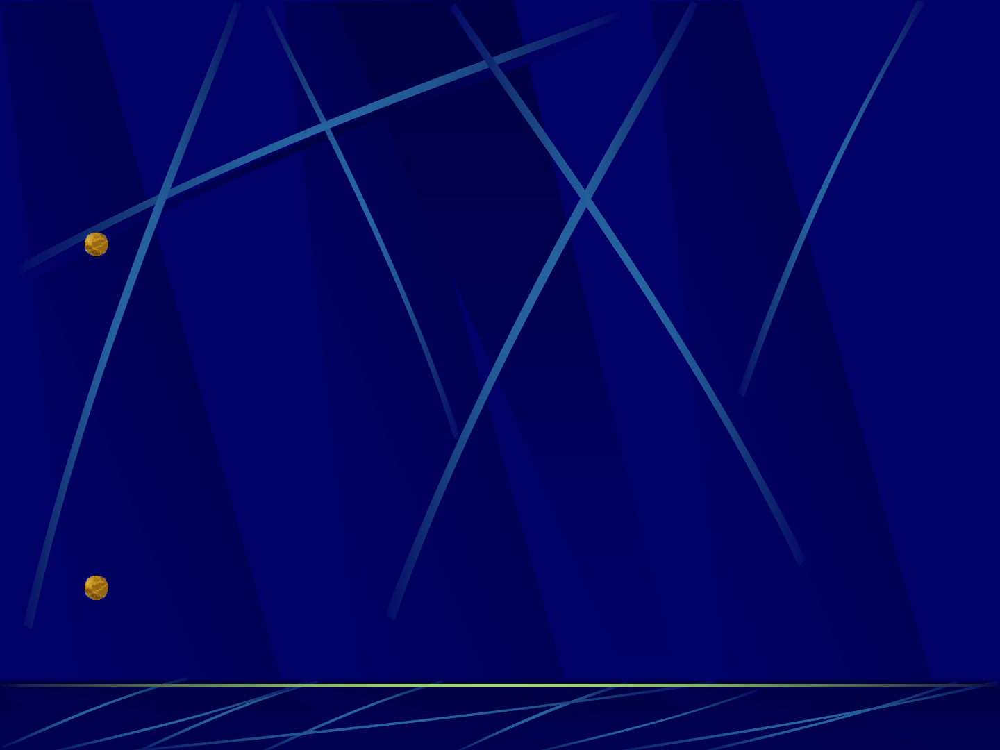

Kabel II
100Base-Tx
o 100Mbit (Fast-Ethernet) über UTP/STP
Verkabelung
o ein Kabel darf max. 100 m lang sein
o RJ-45 Stecker, Verbindung 1 zu 1
o funktioniert nur mit Hub
o Segmentierung möglich über Repeater (schiebt
Signale einfach durch), Bridge oder Switch
Nullmodemkabel
o gekreuzte Kabel Eingang und Ausgang werden
gedreht